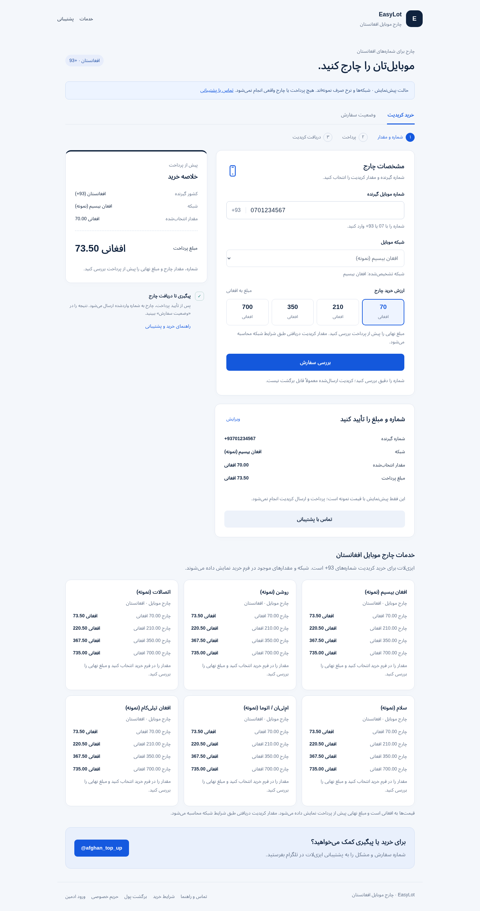

FINTECH / AFGHANISTAN / DARI INTERFACE
A small purchase.
A careful chain of checks.
A mobile airtime storefront connecting cryptocurrency payments to Afghan phone networks, with accepted prices saved per order and uncertain delivery held for review.
By Rizwanullah Muahed · HTML / CSS / JavaScript · Cloudflare Workers / D1

This capture is from the disconnected local preview. The hosted service has separate runtime configuration; a screenshot does not establish live delivery availability.
THE WORKFLOW
Payment confirmation belongs on the server.
A customer enters an Afghan mobile number and an amount in AFN. The server validates the network, denomination and pricing before creating an order. The customer then pays a hosted cryptocurrency invoice.
Returning from that page is not proof of payment. The server independently checks the provider response against the stored invoice, order, currency and amount before attempting airtime delivery.
- ValidateNumber, operator and accepted amount
- VerifySettled payment and stored invoice details
- ClaimAtomic transition before external delivery
- ResolveComplete, fail or hold for review
DECISIONS WORTH REVIEWING
The difficult part is what happens between states.
Preserve the price the customer accepted
Orders store the AFN amount, exchange rate and service markup. An administrator's later pricing change applies to new purchases, without rewriting the agreed amounts on existing ones.
Prevent simultaneous delivery attempts
A persisted compare-and-set claims the order before calling the airtime provider. Concurrent callbacks cannot both dispatch the same stored order. This is an application-level guard, not a claim of universal exactly-once provider delivery.
Keep uncertain results visible
A timeout can occur after a provider accepts a request. The order moves to review rather than being sent again automatically. Transaction references support operational reconciliation.
Keep tracking private to the purchasing browser
Order lookup requires a private access cookie. Administrator sessions use separate authentication and authorization; payment return URLs do not grant delivery permission.
VALIDATION & BOUNDARIES
Reviewable evidence.
Explicit operating limits.
The refreshed source passes 35 mocked automated tests, covering payment matching, callbacks, pricing, authentication, concurrent dispatch, ambiguous outcomes and disconnected preview. The Worker build includes a bundled-preview smoke check. These checks send no real airtime and spend no provider funds.
Refunds require operational handling. A durable delivery queue, scheduled reconciliation and reservations across different orders are not included. A production VPS migration needs a separate adapter and secure administrator bootstrap.
Read the technical project overview →FOR TECHNICAL REVIEWERS
Source, tests and migrations are available by request.
The implementation stays private. This public case study contains documentation and screenshots, with no runtime credentials, customer records or production database exports.
Contact Rizwanullah →